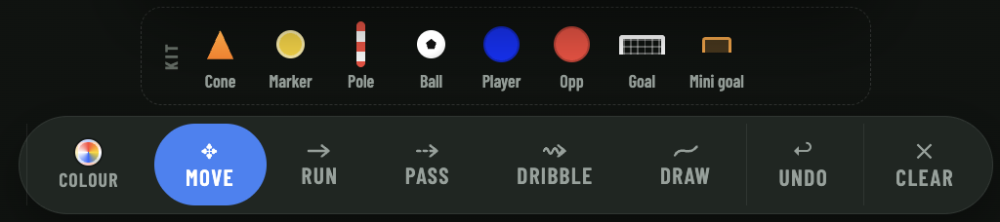

Pitch-side companion
Run the game
from the sideline
Your game day companion in the palm of your hand. Made for phone and tablet.
- Game day setup in under a minute
- Simple substitutions, every one timestamped
- In game notes stamped with the minute
- Game and subs timers running side by side
Team
Game day
Drills
vs Northgate United
H1 12:07
Subs 03:41
Pumas
2
:
1
Northgate
Free, no ads
Works without internet
Phone and tablet
Game day
Everything the 90 minutes throws at you
Five things happen at once and the parents are watching.
01
Two clocks, one glance
The match clock keeps its own time for each half. The subs countdown runs beside it on its own, and when it hits zero it starts again for the next block.
02
Multiple substitutions
Never lose track of your subs. Change positions easily. Every change is saved with the time it happened.
CM
Cooper Hale
42 min
▼
LB
Jaylan Ross
38 min
▼
ST
Tom Whitlock
31 min
Choose 2 replacements
The bench is sorted by who has played the least and the pitch by who has been out there longest, so you can see at a glance whose turn it is.
03
Every change time-stamped
Confirm and the swap is saved with the minute it happened. Tapped the wrong name? Undo removes the whole change from the record rather than adding a second sub on top of it.
34'
▲ Jonah Reid
▼ Cooper Hale
H2
34'
▲ Sam Okoye
▼ Jaylan Ross
H2
18'
▲ Ari Kelso
▼ Beau Lang
H1
04
Write it down while you still remember
The notes button sits at the top left of the pitch, where your thumb already is. Tap the stopwatch and the match minute drops straight into your note. Everything saves as you type, so locking the phone will not lose it.
⏱ 12'
Saved
12' shape too flat, push 8 on
26' Ari limping, check at half time
34' better after the double change
05
Full time report
Finish the game and you get a summary before anything is saved: the score, every sub with its minute, how long each player was on, and your notes. Send it to the team chat as a picture.
Jaylan Ross
53'
Cooper Hale
42'
Sam Okoye
26'
Ari Kelso
14'
Before kick-off
Set the team up once, not every Saturday
Your squad, your formation, your kit colours. Turn up on Saturday with the line-up already done.
Squad and shape
Named players with their positions, 11-a-side or 9-a-side, and a formation that puts everyone in place for you. Drag anyone to adjust.

Bench and out
Drag anyone who is injured or away into the Out zone and they will not be offered as a sub until you tap them back in.

Fixture and line-up
Date, kick-off time, who you are playing and any notes. Save the board as the line-up for that game and send the team sheet to the group chat.

Your colours
Pick your kit colour and theirs, so the board looks like the game you are about to play.
Training nights
Draw a drill. Press play. Watch it run.
Put your cones, balls and numbered players on the pitch, then draw the passes and runs with a finger. Press play and the app works out the order for you, including a pass into space, a player running onto it, and everyone rotating back to the end of the queue.


01
Lay it out. Pieces snap to a hidden grid, so your square actually looks like a square.
02
Draw the movement. Wobbly lines straighten themselves and the ends clip neatly onto the nearest cone or ball.
03
Save it to the library. Add your coaching points, load it back with one tap, or share it as a picture.
Build tonight's session
Works without internet
Add it to your home screen and it keeps working at grounds with poor reception. It catches up once you are back in range.
Free, and free of ads
Built by a grassroots coach. You can try all of it without making an account.
Questions coaches ask
Can I track substitutions during the game?
Yes. Tick everyone coming off, choose a replacement for each one by name, confirm, and the whole change is saved with the match minute. Undo removes it again.
Do the timers keep running if I lock the phone?
Yes. Both clocks follow the real time of day, so they are still right when you wake the phone up. Alerts sound while the app is open.
Does it work offline?
Yes. Add it to your home screen and it opens full screen and keeps working with no reception. Anything you change catches up once you are back in range.
Is it free?
Completely. You only need an account if you want your squad, games and drills saved and shared across your devices.
Kick-off is Saturday
Set your squad up tonight and turn up with the line-up, the clocks and the bench already sorted.
Start free, no sign-up
© 2026 My Soccer Coach · Made for grassroots coaches